Как начать работать с Google BigQuery

Ранее я публиковал цикл материалов о работе с Google BigQuery. В этой статье расскажу о преимуществах и особенностях сервиса, а также о дополнительных инструментах для BigQuery.
Google BigQuery — это облачная база данных с высочайшей скоростью обработки огромных массивов данных.

Как начать работу в Google BigQuery
Войдите в Google Cloud Platform. При первом запуске система предложит активировать бесплатный пробный период и получить кредит $300 на 12 месяцев. Честно говоря, чтобы потратить за год в BigQuery эту сумму, вам придется очень сильно постараться.
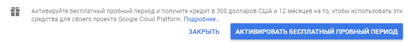
Для дальнейшей работы введите платежные данные.
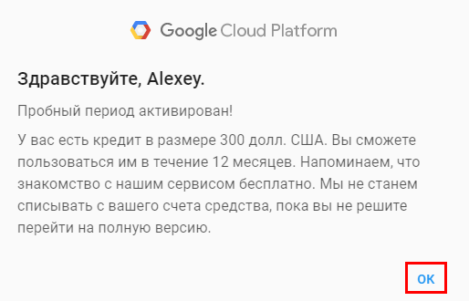
Нажмите «Выбрать проект».
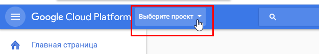
Затем — «Создать проект».
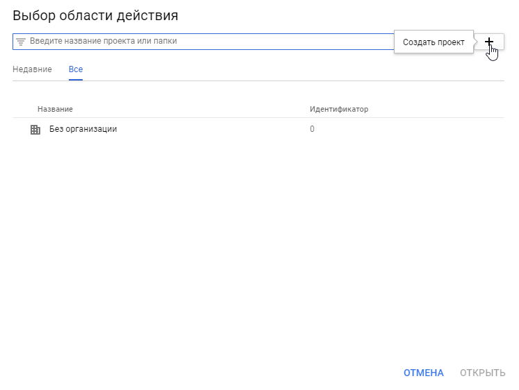
Примите условия использования платформы.
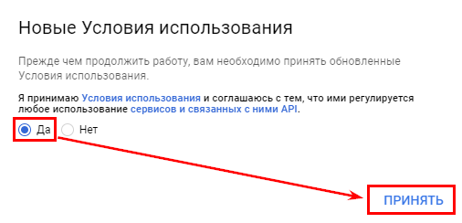
Наконец назовите проект, задайте настройки уведомлений и еще раз согласитесь с условиями использования платформы.
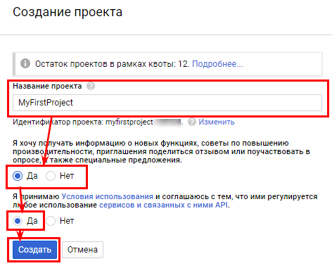
После подтверждения подождите несколько минут.
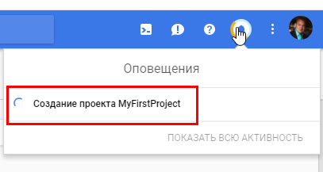
Вскоре вы получите оповещение, что проект создан.
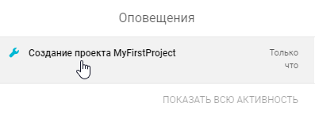
Перейдите в раздел оплаты и привяжите платежный аккаунт.
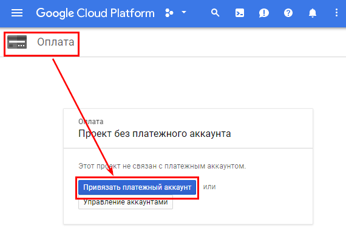
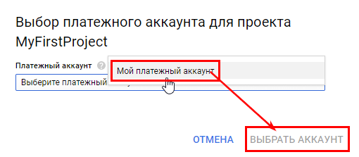
Теперь проект привязан к только что созданному платежному аккаунту.
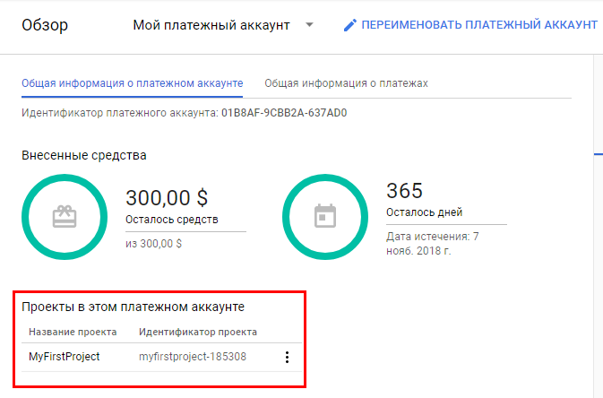
Перейдите в интерфейс Google BigQuery и напишите свой первый запрос.
Чтобы открыть редактор запросов, нажмите «Compose query» или сочетание клавиш «Ctrl + Space».
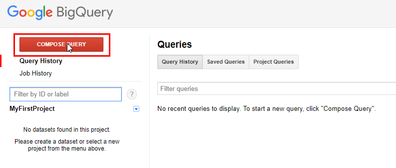
Рассмотрим, как написать первый запрос на примере публичных данных в BigQuery. Возьмите первые 15 строк из таблицы project_tycho_reports, которая находится в наборе публичных данных lookerdata.
SELECT *
FROM [lookerdata:cdc.project_tycho_reports]
LIMIT 25
Запрос вернет результат:
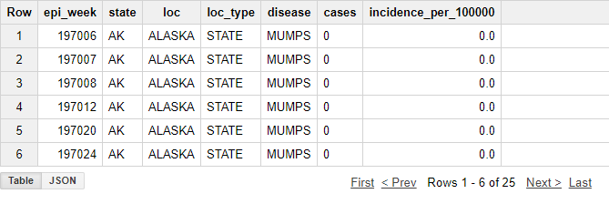
Ранее я описывал самые простые способы для загрузки собственных данных в Google BigQuery, а в этой статье далее расскажу, как загрузить данные с помощью языка R.
Преимущества Google BigQuery
Скорость — это основное преимущество BigQuery, но не единственное. BigQuery — облачный сервис. При его использовании не понадобится арендовать сервер и оплачивать поддержку.
Стоимость BigQuery значительно ниже стоимости аренды самого примитивного сервера: даже если вы очень постараетесь и будете ежедневно записывать в эту базу данных миллионы строк, все равно вряд ли сможете потратить более $5.
Следующее преимущество — простота использования. В любой другой системе управления базами данных (СУБД) помимо знания SQL придется долго разбираться с тонкостями администрирования и настройками базы.
И если сам по себе SQL-диалект во всех базах данных очень похожий, то административная часть, как правило, везде устроена по-разному.
У BigQuery всю административную часть на себя взял Google. В этом сервисе нет никаких настроек, индексов, движков таблиц, тайм-аутов или внешних ключей. Реализована поддержка только одной кодировки UTF-8.
Для работы с BigQuery достаточно знать, как загрузить данные в BigQuery, и иметь базовые знания в SQL.
Несмотря на простоту, в BigQuery реализована поддержка практически всех функций СУБД:
- оконные функции;
- хранение данных в виде структур (нереляционные возможности);
- представления и табличные выражения (common table expression).
Правда, на момент публикации статьи сервис не поддерживает:
- рекурсивные запросы;
- создание хранимых процедур и функций;
- транзакции.
Особенности SQL для Google BigQuery
BigQuery умеет переключаться между стандартным SQL и своим диалектами. Между ними также есть разница.
DML-операции INSERT, UPDATE и DELETE на данный момент поддерживаются только при использовании стандартного SQL.
Еще одно отличие между этими диалектами — способ вертикального объединения таблиц. В стандартном SQL для этого служит оператор UNION и ключевое слов ALL или DISTINCT:
SELECT 12 AS A, 32 AS B
UNION ALL
SELECT 2 AS A, 29 AS B
В собственном SQL-диалекте функционал для вертикального объединения таблиц значительно шире. Существует специальный набор функций подстановки таблиц (Table Wildcard Functions).
Как обрабатывать данные из множества таблиц в Google BigQuery
Этот способ объединения таблиц я уже подробно описывал ранее.
Для простого объединения достаточно просто перечислить названия нужных таблиц или подзапросы через запятую. Объединение запросов из примера выше на внутреннем диалекте SQL в BigQuery будет выглядеть так:
SELECT *
FROM (SELECT 12 AS A, 32 AS B), (SELECT 2 AS A, 29 AS B)
Переключатель между SQL-диалектами в BigQuery находится в интерфейсе в блоке опций: нажмите кнопку Show options под редактором запросов.
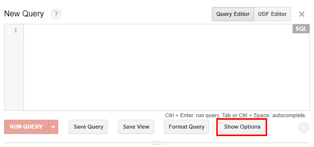
С помощью галочки «SQL Dialect» переключитесь на нужный диалект.
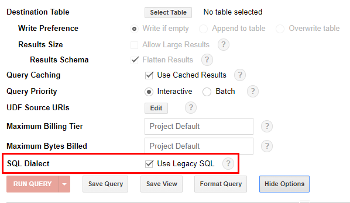
Инструменты для работы с BigQuery
Мы уже разобрались, как загружать данные в базу и как обращаться к данным SQL запросами. Но вряд ли вы хотите взаимодействовать с данными, ограничившись этими возможностями. Скорее всего, вы загружаете данные для построения дашбордов или чего-то подобного.
Как получить данные в различных BI платформах, я писал в статьях об интеграции с электронными таблицами и Microsoft Power BI.
Microsoft Power BI, как и большинство популярных BI-систем и электронных таблиц, с июля 2017 года поддерживает интеграцию с Google BigQuery из коробки. У коннектора довольно скудные возможности: он не умеет обращаться к сохраненным представлениям или отправлять в BigQuery запросы. Пока что с помощью встроенного коннектора можно вытягивать только плоские таблицы.
Simba Drivers
Если вам необходимо получить данные из Google BigQuery в электронной таблице или BI-системе, которая из коробки не поддерживает интеграцию, воспользуйтесь бесплатным Simba Drivers.
Этот драйвер поддерживает все необходимые возможности, включая переключения SQL-диалектов. Подробности настройки ищите в моей статье о связке Microsoft Power BI и Google BigQuery.
Язык R
Язык R — один из самых мощных инструментов для работы с данными. Он умеет как получать данные из Google BigQuery, так и записывать их. Для этого удобнее всего пакет bigrquery.
Для начала установите язык R. Также для удобства работы с R я рекомендую установить интегрированную среду разработки RStudio.
Запустите RStudio и с помощью сочетания клавиш «Ctrl + Alt + Shift + 0» откройте все доступные в ней панели. Чаще всего понадобятся панели Source и Console.
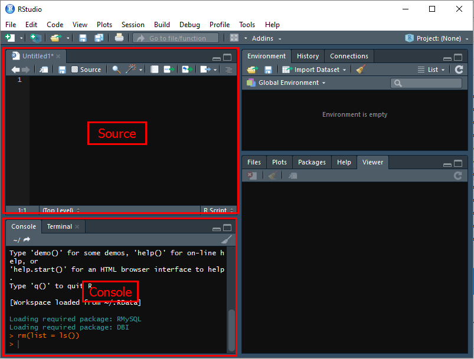
Для установки develop-версии пакета bigrquery из репозитория на GitHub предварительно установите пакет devtools. Введите в окно Source код, затем выделите его (зажмите левой кнопки мыши) и нажмите «Ctrl + Enter» для выполнения команды:
install.packages("devtools")
Теперь установите пакет bigrquery:
devtools::install_github("rstats-db/bigrquery")
Чтобы в R были доступны функции пакета, после установки подключите их с помощью команды library или require. Например, подключим пакет bigrquery с помощью кода:
library(bigrquery)
Структура данных в Google BigQuery состоит из проекта с набором данных, содержащим таблицы. Проект вы уже создали, а теперь для передачи информации создайте набор данных. Выберите в интерфейсе из выпадающего меню «Create new dataset».
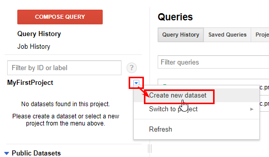
Чтобы создать набор данных с помощью языка R, воспользуйтесь командой insert_dataset. Команда требует всего 2 аргумента:
project — ID проекта (возьмите из URL в BigQuery).
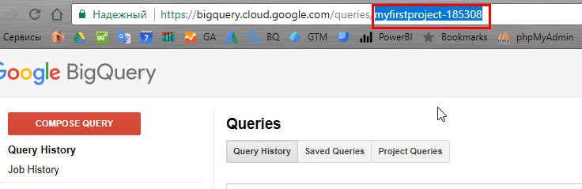
dataset — название нового набора данных.
Давайте создадим первый набор данных с названием myFirstDataSet. Введите в область Source приведенный ниже код, выделите команду с помощью мыши и нажмите «Ctrl+Enter» для выполнения.
insert_dataset(project = "myfirstproject-185308", dataset = "myFirstDataSet")
В окне Console в RStudio появится запрос о создании учетных данных, чтобы в дальнейшем не требовалась повторная аутентификация.
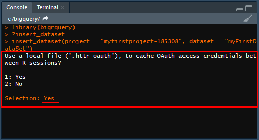
Введите на запрос Selection в Console ответ Yes и нажмите Enter. Откроется браузер — разрешите доступ к данным и получите авторизационный код.
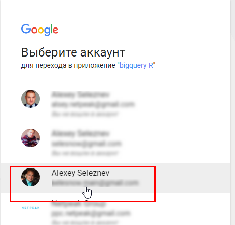
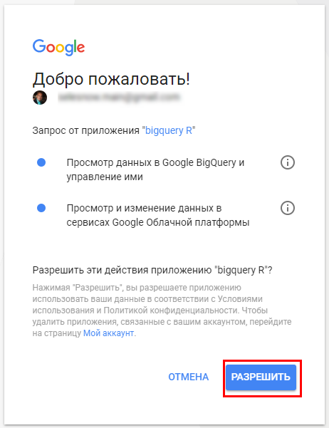
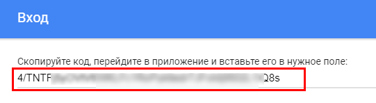
Скопируйте сгенерированный код. Затем вставьте его в Console RStudio в ответ на запрос авторизационного кода и нажмите Enter.
Отлично, вы создали набор данных.
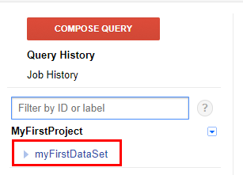
Теперь запишите встроенную в R таблицу mtcars в набор данных myFirstDataSet. Для передачи данных из R в BigQuery в пакете bigrquery есть функция insert_upload_job. Она принимает такие аргументы:
project — ID проекта (смотрите либо в URL проекта, либо в режиме переключения проектов).
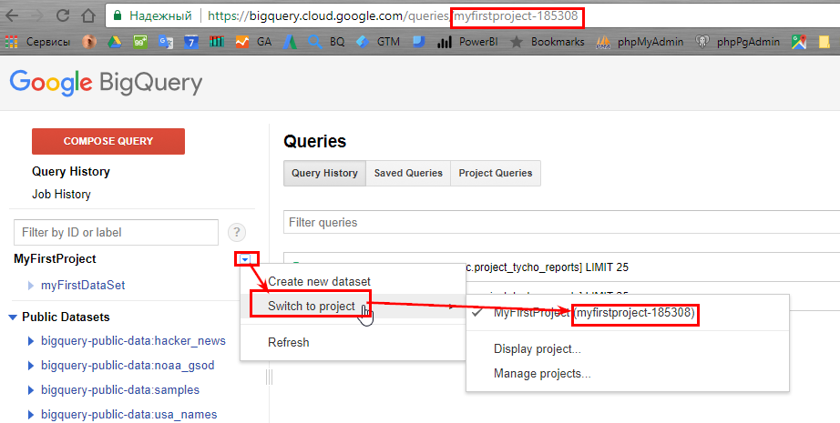
dataset — название набора данных, куда вы планируете отправить данные. В нашем случае myFirstDataSet.
table — название таблицы с записанными данными.
values — data frame (таблица данных) в R с данными для передачи в BigQuery.
billing = project аккаунта для оплаты операции. По умолчанию — платежный аккаунт, который привязан к проекту.
create_disposition — опция для определения необходимых действий.
Если в BigQuery нет таблицы с заданным в аргументе table названием, укажите “CREATE_IF_NEEDED” — система создаст новую таблицу.
Если указать “CREATE_NEVER” и таблица с заданным именем не найдется в наборе данных, будет возвращена соответствующая ошибка.
write_disposition — опция для выбора добавления данных в существующую таблицу.
“WRITE_APPEND” — дописать данные в таблицу.
“WRITE_TRUNCATE” — перезаписать данные в таблице.
“WRITE_EMPTY” — записать данные для пустой таблицы.
Код для передачи в BigQuery встроенной в R таблицы mtcars:
insert_upload_job(project = "myfirstproject-185308",
dataset = "myFirstDataSet",
table = "mtcars_bigquery",
values = mtcars,
create_disposition = "CREATE_IF_NEEDED",
write_disposition = "WRITE_APPEND")
При успешном выполнении операции в консоли R появится дополнительная информация, а в интерфейсе BigQuery — созданная таблица mtcars_bigquery.
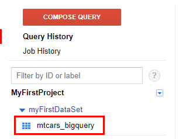
Для запроса данных из BigQuery в R в пакете bigrquery предназначена функция query_exec. Основные аргументы:
query — текст SQL-запроса, результат которого вы хотите загрузить в R.
project — ID проекта для запроса данных.
page_size — максимальный размер возвращаемого результата в строках (по умолчанию 10000).
max_pages — максимальное количество страниц возврата запросом (по умолчанию 10).
use_legacy_sql — выбор SQL-диалекта для обработки запроса.
По умолчанию задано значение TRUE с внутренним диалектом BigQuery.
Для стандартного диалекта SQL задайте в этом аргументе значение FALSE.
Для обратного запроса данных, которые вы отправили в BigQuery в прошлом шаге, задайте команду:
bq_mtcars_table <- query_exec(query = "SELECT * FROM myFirstDataSet.mtcars_bigquery",
project = "myfirstproject-185308",
use_legacy_sql = TRUE)
В рабочем окружении (описание которого вы видите в окне Environment) появится новый объект bq_mtcars_table.
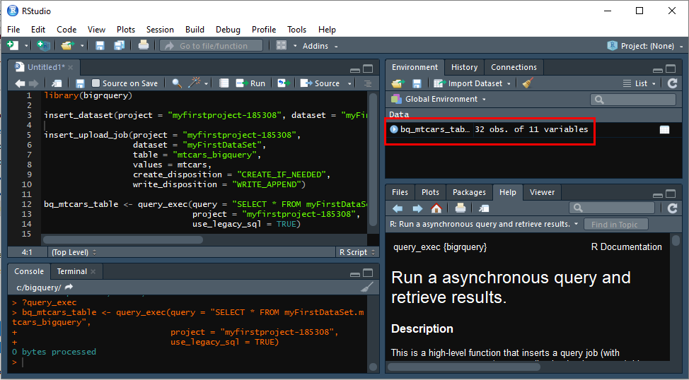
Выводы
Google BigQuery — простой в работе и в то же время мощнейший инструмент для хранения и обработки данных. Это облачная база данных с поддержкой большинства функций СУБД.
Сервис обходится значительно дешевле содержания, поддержки и администрирования сервера для бесплатных баз данных (MySQL или PostgreSQL).
Надеюсь, мой цикл инструкций для начала работы с Google BigQuery упростит ваши будни.
Успехов в работе с большими данными!